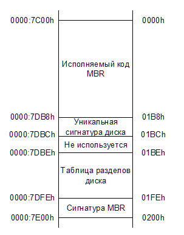
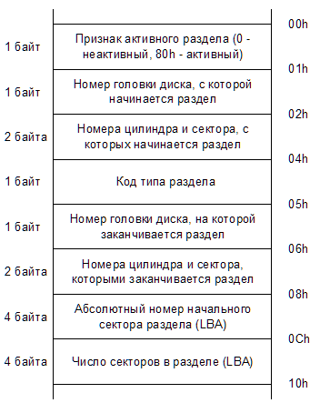
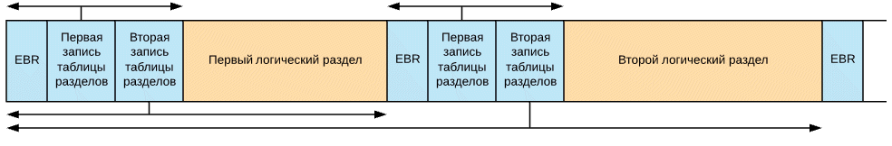

Изучаем MBR и GPT
Для работы с жестким диском его для начала необходимо как-то разметить, чтобы операционная система могла понять в какие области диска можно записывать информацию. Поскольку жесткие диски имеют большой объем, их пространство обычно разбивают на несколько частей - разделов диска. Каждому такому разделу может быть присвоена своя буква логического диска (для систем семейства Windows) и работать с ним можно, как будто это независимый диск в системе.
Способов разбиения дисков на разделы на сегодняшний день существует два. Первый способ - использовать MBR. Этот способ применялся еще чуть ли не с появления жестких дисков и работает с любыми операционными системами. Второй способ - использовать современную систему разметки - GPT. Этот способ поддерживают только современные версии Windows и Linux, поскольку он еще относительно молод.
Структура MBR
До недавнего времени структура MBR использовалась на всех персональных компьютерах для того, чтобы можно было разделить один большой физический жесткий диск (HDD) на несколько логических частей - разделы диска (partition). В настоящее время MBR активно вытесняется новой структурой разделения дисков на разделы - GPT (GUID Partition Table). Однако MBR используется еще довольно широко, так что посмотрим что она из себя представляет
MBR всегда находится в первом секторе жесткого диска. При загрузке компьютера, BIOS считывает этот сектор с диска в память по адресу 0000:7C00h и передает ему управление.

Итак, первая секция структуры MBR - это секция с исполняемым кодом, который и будет руководить дальнейшей загрузкой. Размер этой секции может быть максимум 440 байт. Далее идут 4 байта, отведенные на идентификацию диска. В операционных системах, где идентификация не используется, это место может занимать исполняемый код. То же самое касается и последующих 2 байт.
Начиная со смещения 01BEh находится сама таблица разделов жесткого диска. Таблица состоит из 4 записей (по одной на каждый возможный раздел диска) размером 16 байт.
Структура записи для одного раздела:

Первым байтом в этой структуре является признак активности раздела. Этот признак определяет с какого раздела следует продолжить загрузку. Может быть только один активный раздел, иначе загрузка продолжена не будет.
Следующие три байта - это так называемые CHS-координаты первого сектора раздела.
По смещению 04h находится код типа раздела. Именно по этому типу можно определить что находится в данном разделе, какая файловая система на нем и т.п. Список зарезервированных типов разделов можно посмотреть, например, в википедии по ссылке Типы разделов.
После типа раздела идут 3 байта, определяющие CHS-координаты последнего сектора раздела.
CHS-координаты сектора расшифровываются как Cylinder Head Sector и соответственно обозначают номер цилиндра (дорожки), номер головки (поверхности) и номер сектора. Цилиндры и головки нумеруются с нуля, сектор нумеруется с единицы. Таким образом CHS=0/0/1 означает первый сектор на нулевом цилиндре на нулевой головке. Именно здесь находится сектор MBR.
Все разделы диска, за исключением первого, обычно начинаются с нулевой головки и первого сектора какого-либо цилиндра. То есть их адрес будет N/0/1. Первый раздел диска начинается с головки 1, то есть по адресу 0/1/1. Это все из-за того, что на нулевой головке место уже занято сектором MBR. Таким образом, между сектором MBR и началом первого раздела всегда есть дополнителььные неиспользуемые 62 сектора. Некоторые загрузчики ОС используют их для своих нужд.
Интересен формат хранения номера цилиндра и сектора в структуре записи раздела. Номер цилиндра и номер сектора делят между собой два байта, но не поровну, а как 10:6. То есть на номер сектора приходится младшие 6 бит младшего байта, что позволяет задавать номера секторов от 1 до 63. А на номер цилиндра отведено 10 бит - 8 бит старшего байта и оставшиеся 2 бита от младшего байта: "CCCCCCCC CCSSSSSS", причем в младшем байте находятся старшие биты номера цилиндра.
Проблема с CHS-координатами состоит в том, что с помощью такой записи можно адресовать максимум 8 Гб диска. В эпоху DOS это было приемлемо, однако довольно скоро этого перестало хватать. Для решения этой проблемы была разработана система адресации LBA (Logical Block Addressing), которая использовала плоскую 32-битную нумерацию секторов диска. Это позволило адресовать диски размером до 2Тб. Позже разрядность LBA увеличили до 48 бит, однако MBR эти изменения не затронули. В нем по-прежнему осталась 32-битная адресация секторов.
Итак, в настоящее время повсеместно используется LBA-адресация для секторов на диске и в структуре записи раздела адрес его первого сектора прописывается по смещению 08h, а размер раздела - по смещению 0Ch.
Для дисков размером до 8Гб (когда адресация по CHS еще возможна) поля структуры с CHS-координатами и LBA-адресации должны соответствовать друг другу по значению (корректно конвертироваться из одного формата в другой). У дисков размером более 8Гб значения всех трех байт CHS-координат должны быть равны FFh (для головки допускается также значение FEh).
В конце структуры MBR всегда находится сигнатура AA55h. Она в какой-то степени позволяет проверить, что сектор MBR не поврежден и содержит необходимые данные.
Расширенные разделы
Разделы, отмеченные в таблице типом 05h и 0Fh, это так называемые расширенные разделы. С их помощью можно создавать больше разделов на диске, чем это позволяет MBR. На самом деле расширенных разделов несколько больше, например есть разделы с типами C5h, 15h, 1Fh, 91h, 9Bh, 85h. В основном все эти типы разделов использовались в свое время различными операционными системами (такими как например OS/2, DR-DOS, FreeDOS) с одной и той же целью - увеличить количество разделов на диске. Однако со временем различные форматы отпали и остались только разделы с типами 05h и 0Fh. Единственное исключение - это тип 85h. Он до сих пор может использоваться в Linux для формирования второй цепочки логических дисков, скрытых от других операционных систем. Разделы с типом 05h используются для дисков менее 8Гб (где еще возможна адресация через CHS), а тип 0Fh используется для дисков больше 8Гб (и используется LBA-адресация).
В первом секторе расширенного раздела находится структура EBR (Extended Boot Record). Она во многом схожа со структурой MBR, но имеет следующие отличия:
- В EBR нет исполняемого кода. Некоторые загрузчики могут его туда записывать, но обычно это место заполнено нулями
- Сигнатуры диска и два неиспользуемых байта должны быть заполнены нулями
- В таблице разделов могут быть заполнены только две первых записи. Остальные две записи должны быть заполнены нулями
В конце структуры EBR, также как и в MBR, должно находиться "магическое" значение AA55h.
В отличие от MBR, где позволяется создавать не более четырёх разделов, структура EBR позволяет организовать список логических разделов, ограниченный лишь размером раздела-контейнера (того самого, который с типом 05h или 0Fh). Для организации такого списка используется следующий формат записей: первая запись в таблице разделов EBR указывает на логический раздел, связанный с данным EBR, а вторая запись указывает на следующий в списке раздел EBR. Если данный логический раздел является последним в списке, то вторая запись в таблице разделов EBR должна быть заполнена нулями.
Формат записей разделов в EBR аналогичен формату записи в структуре MBR, однако логически немного отличается.
Признак активности раздела для разделов структуры EBR всегда будет 0, так как загрузка осуществлялась только с основных разделов диска. Координаты CHS, с которых начинается раздел используются, если не задействована LBA-адресация, также как и в структуре MBR.
А вот поля, где в режиме LBA-адресации должны находиться номер начального сектора и количество секторов раздела, в структуре EBR используются несколько иначе.

Для первой записи таблицы разделов EBR в поле начального сектора раздела (смещение 08h) записывается расстояние в секторах между текущим сектором EBR и началом логического раздела, на который ссылается запись. В поле количества секторов раздела (смещение 0Ch) в этом случае пишется размер этого логического раздела в секторах.
Для второй записи таблицы разделов EBR в поле начального сектора раздела записывается расстояние между сектором самой первой EBR и сектором следующей EBR в списке. В поле количества секторов раздела в этом случае пишется размер области диска от сектора этой следующей структуры EBR и до конца логического раздела, относящегося к этой структуре.
Таким образом, первая запись таблицы разделов описывает как найти, и какой размер занимает текущий логический раздел, а вторая запись описывает как найти, и какой размер занимает следующий EBR в списке, вместе со своим разделом.
Структура GPT
В современных компьютерах на смену BIOS пришла новая спецификация UEFI, а вместе с ней и новое устройство разделов на жестком диске - GUID Partition Table (GPT). В этой структуре были учтены все недостатки и ограничения, накладываемые MBR, и разработана она была с большим запасом на будущее.
В структуре GPT используется теперь только LBA-адресация, никаких CHS больше нет и никаких проблем с их конвертацией тоже. Причем под LBA-адреса отведено по 64 бита, что позволяет работать с ними без всяких ухищрений, как с 64-битными целыми числами, а также (если до этого дойдет) даст в будущем возможность без проблем расширить 48-битную LBA-адресацию до 64-битной.
Кроме того, в отличие от MBR, структура GPT хранит на диске две своих копии, одну в начале диска, а другую в конце. Таким образом, в случае повреждения основной структуры, будет возможность восстановить ее из сохраненной копии.
Рассмотрим теперь устройство структуры GPT подробнее. Вся структура GPT на жестком диске состоит из 6 частей:
| LBA-адрес | Размер (секторов) | Назначение |
| LBA 0 | 1 | Защитный MBR-сектор |
| LBA 1 | 1 | Первичный GPT-заголовок |
| LBA 2 | 32 | Таблица разделов диска |
| LBA 34 | NN | Содержимое разделов диска |
| LBA -34 | 32 | Копия таблицы разделов диска |
| LBA -2 | 1 | Копия GPT-заголовка |
Защитный MBR-сектор
Первый сектор на диске (с адресом LBA 0) - это все тот же MBR-сектор. Он оставлен для совместимости со старым программным обеспечением и предназначен для защиты GPT-структуры от случайных повреждений при работе программ, которым про GPT ничего не известно. Для таких программ структура разделов будет выглядеть как один раздел, занимающий все место на жестком диске.
Структура этого сектора ничем не отличается от обычного сектора MBR. В его таблице разделов дожна быть создана единственная запись с типом раздела 0xEE. Раздел должен начинаться с адреса LBA 1 и иметь размер 0xFFFFFFFF. В полях для CHS-адресации раздел соответственно должен начинаться с адреса 0/0/2 (сектор 1 занят под саму MBR) и иметь конечный CHS-адрес FF/FF/FF. Признак активного раздела должен иметь значение 0 (неактивный).
При работе компьютера с UEFI, данный MBR-сектор просто игнорируется и никакой код в нем также не выполняется.
Первичный GPT-заголовок
Этот заголовочный сектор содержит в себе данные о всех LBA-адресах, использующихся для разметки диска на разделы.
Структура GPT-заголовка:
| Смещение (байт) | Размер поля (байт) | Пример заполнения | Название и описание поля |
| 0x00 | 8 байт | 45 46 49 20 50 41 52 54 | Сигнатура заголовка. Используется для идентификации всех EFI-совместимых GPT-заголовков. Должно содержать значение 45 46 49 20 50 41 52 54, что в виде текста расшифровывается как "EFI PART". |
| 0x08 | 4 байта | 00 00 01 00 | Версия формата заголовка (не спецификации UEFI). Сейчас используется версия заголовка 1.0 |
| 0x0C | 4 байта | 5C 00 00 00 | Размер заголовка GPT в байтах. Имеет значение 0x5C (92 байта) |
| 0x10 | 4 байта | 27 6D 9F C9 | Контрольная сумма GPT-заголовка (по адресам от 0x00 до 0x5C). Алгоритм контрольной суммы - CRC32. При подсчёте контрольной суммы начальное значение этого поля принимается равным нулю. |
| 0x14 | 4 байта | 00 00 00 00 | Зарезервировано. Должно иметь значение 0 |
| 0x18 | 8 байт | 01 00 00 00 00 00 00 00 | Адрес сектора, содержащего первичный GPT-заголовок. Всегда имеет значение LBA 1. |
| 0x20 | 8 байт | 37 C8 11 01 00 00 00 00 | Адрес сектора, содержащего копию GPT-заголовка. Всегда имеет значение адреса последнего сектора на диске. |
| 0x28 | 8 байт | 22 00 00 00 00 00 00 00 | Адрес сектора с которого начинаются разделы на диске. Иными словами - адрес первого раздела диска |
| 0x30 | 8 байт | 17 C8 11 01 00 00 00 00 | Адрес последнего сектора диска, отведенного под разделы |
| 0x38 | 16 байт | 00 A2 DA 98 9F 79 C0 01 A1 F4 04 62 2F D5 EC 6D | GUID диска. Содержит уникальный идентификатор, выданный диску и GPT-заголовку при разметке |
| 0x48 | 8 байт | 02 00 00 00 00 00 00 00 | Адрес начала таблицы разделов |
| 0x50 | 4 байта | 80 00 00 00 | Максимальное число разделов, которое может содержать таблица |
| 0x54 | 4 байта | 80 00 00 00 | Размер записи для раздела |
| 0x58 | 4 байта | 27 C3 F3 85 | Контрольная сумма таблицы разделов. Алгоритм контрольной суммы - CRC32 |
| 0x5C | 420 байт | 0 | Зарезервировано. Должно быть заполнено нулями |
Система UEFI проверяет корректность GPT-заголовка, используя контрольный суммы, вычисляемые по алгоритму CRC32. Если первичный заголовок поврежден, то проверяется контрольная сумма копии заголовка. Если контрольная сумма копии заголовка правильная, то эта копия используется для восстановления информации в первичном заголовке. Восстановление также происходит и в обратную сторону - если первичный заголовок корректный, а копия неверна, то копия восстанавливается по данным из первичного заголовка. Если же обе копии заголовка повреждены, то диск становится недоступным для работы.
У таблицы разделов дополнительно существует своя контрольная сумма, которая записывается в заголовке по смещению 0x58. При изменении данных в таблице разделов, эта сумма рассчитывается заново и обновляется в первичном заголовке и в его копии, а затем рассчитывается и обновляется контрольная сумма самих GPT-заголовков.
Таблица разделов диска
Следующей частью структуры GPT является собственно таблица разделов. В настоящее время операционные системы Windows и Linux используют одинаковый формат таблицы разделов - максимум 128 разделов, на каждую запись раздела выделяется по 128 байт, соответственно вся таблица разделов займет 128*128=16384 байт, или 32 сектора диска.
Формат записи раздела:
| Смещение (байт) | Размер поля (байт) | Пример заполнения | Название и описание поля |
| 0x00 | 16 байт | 28 73 2A C1 1F F8 D2 11 BA 4B 00 A0 C9 3E C9 3B | GUID типа раздела. В примере приведен тип раздела "EFI System partition". Список всех типов можно посмотреть здесь |
| 0x10 | 16 байт | C0 94 77 FC 43 86 C0 01 92 E0 3C 77 2E 43 AC 40 | Уникальный GUID раздела. Генерируется при создании раздела |
| 0x20 | 8 байт | 3F 00 00 00 00 00 00 00 | Начальный LBA-адрес раздела |
| 0x28 | 8 байт | CC 2F 03 00 00 00 00 00 | Последний LBA-адрес раздела |
| 0x30 | 8 байт | 00 00 00 00 00 00 00 00 | Атрибуты раздела в виде битовой маски |
| 0x38 | 72 байта | EFI system partition | Название раздела. Unicode-строка длиной 36-символов |
Атрибуты раздела, записываемые по смещению 0x30 могут иметь следующие значения битов:
| бит 0 | Указывает необходимость раздела для функционирования системы. OEM-разработчики могут таким образом защищать свои разделы от перезаписи дисковыми утилитами |
| бит 60 | Помечает раздел как доступный только для чтения. Используется только для "Microsoft Basic Data Partition" с типом {EBD0A0A2-B9E5-4433-87C0-68B6B72699C7} |
| бит 62 | Помечает раздел как скрытый. Используется только для "Microsoft Basic Data Partition" с типом {EBD0A0A2-B9E5-4433-87C0-68B6B72699C7} |
| бит 63 | Предотвращает автоматическое назначение буквы диска данному разделу. Используется только для "Microsoft Basic Data Partition" с типом {EBD0A0A2-B9E5-4433-87C0-68B6B72699C7} |
Остальные части описывать не вижу смысла, так как с ними все понятно и без подробного описания. Содержимое разделов - говорит само за себя, копия таблицы разделов - тоже понятно, хранит копию таблицы разделов, ну и последний сектор диска - это копия GPT-заголовка.